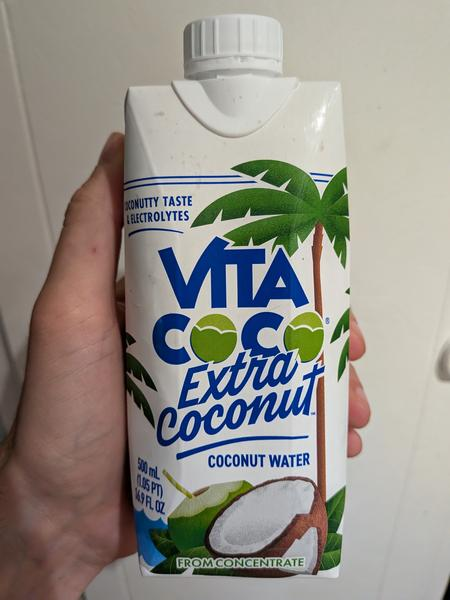

June 2025 · 16.9 fl oz · Still · Pasteurized · Added Sugar · From Concentrate
How do you make coconut water creamier? You add coconut cream to it. And a gumming agent. And sugar. And you use a concentrate — but that might just be for cost saving purposes.
I’m less than impressed with this stuff, but it’s almost not even a competitor vs standard coconut water. This is a weak coconut milk, and I’m not really into drinking weak coconut milks. This just doesn’t have the delicate flavors you want in a coconut water — it’s too creamy to feel refreshing or even fresh. But if you like the taste of coconut milk and want something you can drink, you’ll be glad this exists.